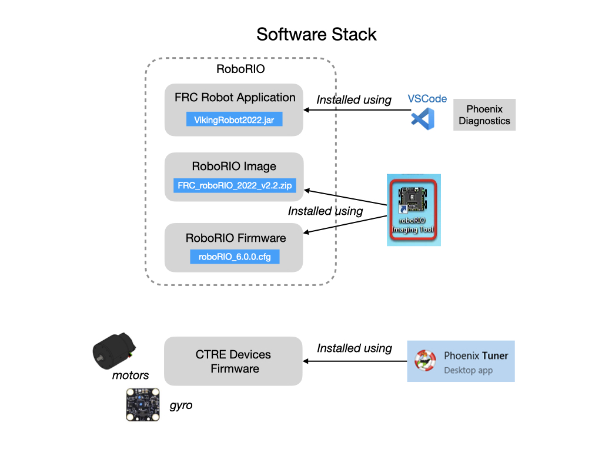

RoboRio and Device Software
The NI-roboRIO is the main robot controller used for FRC. The roboRIO serves as the “brain” for the robot running team-generated code that commands all of the other hardware. Prior to using the RoboRio you have to install, or update, the software stack. Here are the components that need to be installed.
Here is a step-by-step guide for accomplishing the install.

Important
RoboRio and Device Software is required for testing your code on the real robot. It is not needed for simulation!
Step 1. Install the FRC Game Tools
The first step is to Install the FRC Game Tools. These can be down loaded from the NI FRC Game Tools releases site, and only supports Windows. After the install it asks you to login to your NI Activation account and enter a serial number. It’s not clear why you need the account, but here’s information on getting the serial number. Once you have the serial number you can use the Activation Wizard.
Installed tools include:
The RobiRIO Imaging Tool and images
FRC Driver Station
Step 2. Image the RoboRio
The Imaging Tool is used to install the roboRIO Firmware and the Image. The image is the equivalent of the operating system. The roboRIO 2 must be imaged using the roboRIO 2.0 microSD card imaging process. This also applies if you’re upgrading from a previous year. Once the image is flashed to a microSD card and inserted the team number will need to be set using the RoboRIO imaging tool. See Setting the roboRIO Team Number in the FRC documentation. If you have any problems with the install checkout the Troubleshooting steps.
Note
If you have the older roboRIO then all of the imaging is done from the Imaging Tool. If the RoboRio has already been imaged from a previous year and already has an microSD card inserted then the Imaging Tool can be used to update the software. Open the RoboRIO Imaging Tool and follow the instructions.
Once the RoboRIO is imaged it sets up the RoboRIO Web Dashboard, which is a webpage built into the roboRIO that can be used for checking status and updating settings of the roboRIO. Use 172.00.67.2 if connected via USB, or roboRIO-67-FRC.local if connected over WiFi.
Step 3. Install Phoenix Framework Software
Install the Phoenix Framework Software onto your PC. Linux and MacOS only includes the C++/Java Phoenix API and CTRE Support of RobotBuilder. The full framework is only supported on Windows and includes the following components.
The C++/Java Phoenix API. These libraries get installed into the ~/wpilib/20XX directory. For Linux and MacOS the C++/Java API can be installed separatelly.
Device Firmware Files (that were tested with the release)
CTRE Support of RobotBuilder
Phoenix Tuner
Installs Phoenix Diagnostics Server into the RoboRIO (needed for CAN diagnostics).
Plotter/Control features
Self-test Snapshot
Device ID and field-upgrade
Step 4. Install Phoenix Firmware
Once you have the Phoenix Tuner installed you can install/update the firmware on the CTRE hardware devices. The firmware can be found in the directory C:UsersPublicDocumentsFRC. Or can be downloaded from the Phoenix Framework Software releases page. The firmware is documented in the Firmware Release Notes.
Start the Phoenix Tuner X. Refer to the Field Upgrade Devices section of the CTRE documentation.
Step 5. Prepare the Robot Controller
If no FRC Robot Application has been deployed to the RobiRIO then deploy the Temporary Diagnostic Server from the Phoenix Tuner. Refer to How to prepare Robot Controller.
Programming the Radio
You can download the latest FRC Radio Configuration Utility Installer from the Prerequisites link. See Programming your Radio in the FRC documentation.
Lab - RoboRIO Software
This lab will get you familiar with how the software is installed and configured on the roboRIO. There are three tasks for this lab:
Understand the roboRIO Imaging Tool
View the roboRIO Web Dashboard
Learn about the FRC Radio Configuration Utility
Understand the roboRIO Imaging Tool
Start the roboRIO robot and connect to it’s IP address from your laptop.
Launch the roboRIO Imaging Tool by clicking on the desktop icon. Once the tool starts make sure that it has connected to a roboRIO Target, top left panel. Also check the team number to see that it’s correct.
Take a note of the current Firmware Version and Image Version. You’ll need these in the next task. It’s important that the firmware and image software is kept up-to-date.
Answer the folling questions:
Is the Firmware version up-to-date? The firmware should be at the required minimum version. See Updating Firmware to answer this question.
Is the Image version up-to-date? The image software should reflect the year that we are currently in. If it’s not up-to-date, read Imaging the roboRIO to learn how to update the Image software. Work with a mentor or senior student programming lead to do the update.
Read the roboRIO Imaging Tool <https://docs.wpilib.org/en/stable/docs/zero-to-robot/step-3/imaging-your-roborio.html#roborio-imaging-tool>_ documentation and make sure that you understand each part of the tool.
View the roboRIO Web Dashboard
The roboRIO Web Dashboard gives detailed information on the configuration of the roboRIO.
Open a web browser and enter the address of the roboRIO into the address bar 172.22.11.2 for USB, or roboRIO-67-FRC.local. Or try 10.00.67.2 if you are connected to the OM5P-AN radio.
Compare the Firmware Version and the Image Version with what you recorded in the last task. They should be the same if you’re connected to the same robot. Read the documentation on System Configuration Tab and understand the purpose of each setting. Do NOT change any of the settings.
Click on the Network icon in the left sidebar to view the network settings. Read the Network Settings Tab documentation to understand the purpose of each setting. Do NOT change any of the settings.
Learn the FRC Radio Configuration Utility
Important
TODO Task to be written.
References
FRC Documentation Imaging your roboRIO
FRC Documentation Programming your Radio